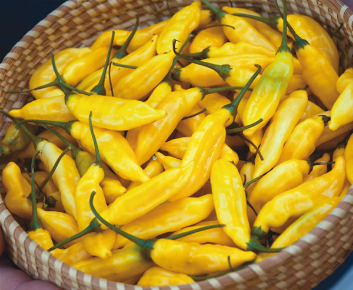
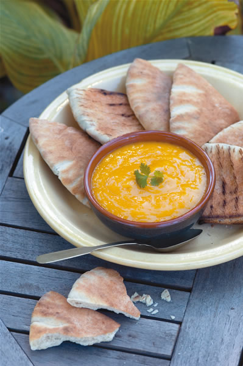
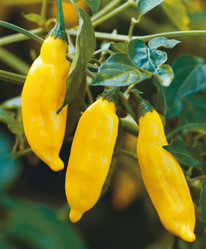

One of the most flavorful of the Andean peppers, ‘Aji Límo’ (pronounced ah-hee lee-mo) has survived from pre-Columbian times. Its name means “Lima pepper,” in reference to the Peruvian city. Its distinctive citrus flavor and the bright yellow color of the ripe pods immediately bring to mind the crisp aromas of lemons and limes. A strong hint of citron (the less acidic cousin of lemons and limes) counterbalances the intense spiciness for which this pepper is well-known. The heat, fruitiness and floral quality contribute to the complexity of flavors achieved when the pepper is used in salsas.
An heirloom with quite an impressive genealogy, ‘Aji Límo’ belongs to a large group of peppers that came under cultivation on the western slopes of the Andes by at least 400 B.C., and perhaps even earlier. Most of these peppers, ‘Aji Límo’ included, belong to the species Capsicum baccatum, which are first cousins to our common bell peppers and most of the subtropical peppers from Mexico. As a group, baccatums are noted for their distinctive flavors and tolerance of cold weather. This is one reason why they have become extremely popular in England, where cool nights can stunt the growth of many peppers. The baccatums also are extremely frost-tolerant, so it is easy to extend their growing season well beyond that of other peppers. In fact, the ‘Aji Límo’ plants in my garden grow well until the temperature drops to about 25 degrees, and even after that, their woody stems can be pruned, dug up and brought indoors for overwintering.
A number of books about peppers have created the misconception that aji is a specific type of pepper. “Aji” is a Spanish transliteration of axi, the Arawak (one of the indigenous languages in the greater Caribbean) word for pepper. “Aji” has become a general term throughout South America for peppers regardless of species or variety.
Several seed companies that sell ‘Aji Límo’ have renamed it. In fact, many years ago, when the pepper first came into circulation in the United States, its name was mistakenly written as aji limón (“lemon pepper”), which may be why its common commercial name is ‘Lemon Drop.’
Commercial seed purity varies greatly, so it is possible to see wide variation not only in pod shape and size, but also in the all-important taste. The ‘Aji Límo’ seed I grow and offer through the Seed Savers Yearbook was collected by Texas pepper specialist Jean Andrews, who found a supply of the peppers at an open market in Arequipa, Peru.
The plants are low bushes, no more than 18 inches tall, and once they begin to produce peppers, their branches tend to droop in an attractive manner. From a landscaping standpoint, this pepper is ideal for borders, can be planted along the tops of retaining walls and will even thrive on balconies and in window boxes. Best of all, it’s a heavy producer. One plant may yield up to 40 pods. Once the pods begin to ripen, they change from light green to a brilliant waxy yellow and they grow to about 3 inches long.
The heat of many Andean peppers puts the reputation of habaneros to shame. I describe ‘Aji Límo’ as a Peruvian hand grenade, and I will repeat that warning: This pepper is extremely spicy, but when it’s tempered by cooking in sweet-flavored salsas, the lemony taste is dynamite.
You can use the salsa on just about anything. With grilled fish, the pepper has no equal; as an ingredient in ceviche (a cold dish of raw fish or shellfish “cooked” in lime juice), it is a natural match. When I have a group of South American friends over for a meal, they head straight for my salsa de ‘Aji Límo.’ It reminds them of home, and they beg me for jars of it.
I have been told I should patent the salsa recipe and sell it. But my basic recipe came from Peru, and how could I contemplate patenting one of their national treasures? ‘Aji Límo’ is a gift of the Andes.
Start ‘Aji Límo’ seeds indoors in flats, then move them outside after the threat of frost has passed (the seedlings are not as frost-tolerant as mature plants). Plant them about 12 inches apart in an area with full sun or partial shade. For seed-saving purposes, do not plant other Capsicum baccatums in your garden or they will cross with ‘Aji Límo.’ Remove seeds from ripe pods and dry them on paper towels out of direct sunlight for at least two or three weeks, or until the seeds seem brittle. Store seeds in airtight containers and set away in a cool, dark, dry closet until needed. If properly stored, the seeds will remain viable for at least five years. Always label your seed containers to keep track of seed harvest dates.
William Woys Weaver gardens in Devon, Pa., and is the author of 100 Vegetables and Where They Came From (available at www.MotherEarthShopping.com).
Heirloom Vegetable Gardening: A Master Gardener’s Guide to Planting, Seed Saving and Cultural History by William Woys Weaver, now on CD. If you want to explore the fabulous flavors, fascinating history and amazing diversity of vegetables, this is the book to start with. Food historian and Mother Earth contributing editor Will Weaver profiles 280 heirloom varieties, with authoritative growing advice and incredible recipes. First published in 1997, Heirloom Vegetable Gardening has since been out of print, with used copies selling online for as much as $300. We are proud to present the original text, with color photos, as a digital book on CD-ROM. Order now.
|
 ROB CARDILLO |
 ROB CARDILLO |
 ROB CARDILLO |